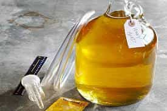
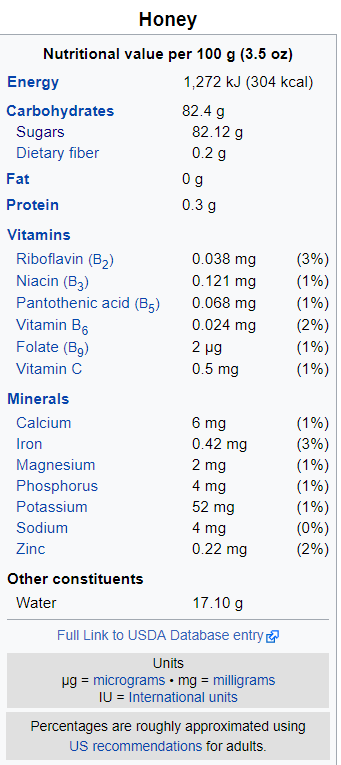
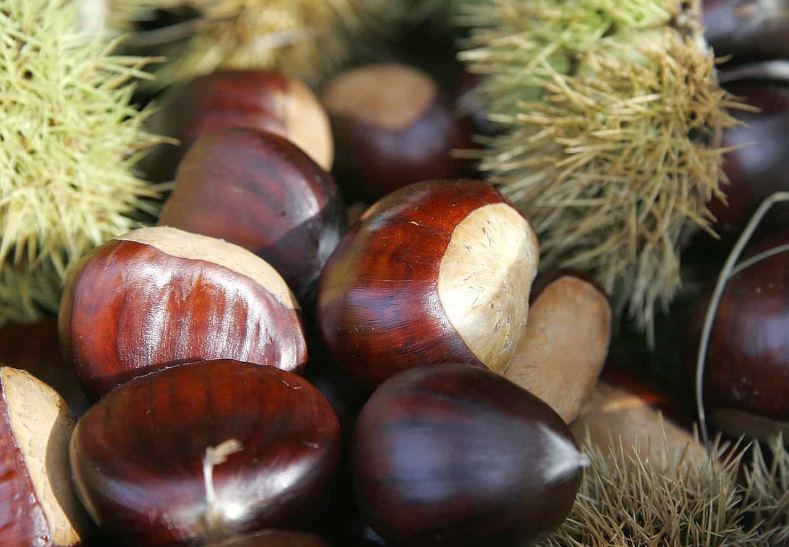

So a couple of weeks ago I discussed how the estrogenic menace is not merely found in soy products, but many products that you can unfortunately find on your grocery store shelves. As luck would have it, there are also products you can eat that will fill the same dietary niche as those bad products, but without the estrogenic side effects. And most of those are also available on the shelves of your local grocery store.
Without further delay, let us discuss what those foodstuffs are, and how they’re beneficial to you:
1. Grass-fed and healthy animals
Meat is good for you, despite what the soy-eaters tell you. The exact nutrient profile of your butchery depends on the various cuts/styles of meat you get, but as a nutritional category, animal products provide more protein, healthy fats, iron, calcium, B-Vitamins, and various other nutrients than any other food product.
However, as the previous article linked above discussed, much of the meat and dairy you find at the grocery store is processed, factory farm-raised, and loaded with hormones, antibiotics, and various other chemicals that you likely wouldn’t want in your body. After all, the first thing any hunter does when he butchers an animal is checking the quarry’s liver to see if it’s diseased—and thus good to eat. So why should you not take that precaution just because you’re not butchering your meat yourself?
If possible, you should try to get your meat from a small reputable source, in which you know that the animals are at the very least not crammed into tiny cages and kept alive with constant hormone and antibiotic injections. Try patronizing your local farmer’s market, or why not try raising your own animals if you have the capability to do so?
Obviously, most of us cannot do so due to space or monetary concerns, so the next time you go to the grocery store, take a good long look at the labels of the meat packaging. If you see ingredients other than “BEEF” or “CHICKEN,” I’d avoid it.
2. Non-Hoppy Alcohols
We’ve already learned that hops contain phytoestrogens, and most beers on the market today contain hops. And most alcohol on the market is beer. So what is a man to do if he wants to get a buzz?
Alcohol can be made of any carbohydrate product. There are beers that are made with malt extract, fruit, honey, corn, and more. If beer’s not your thing, you can try cider, scotch, whiskey, whine, vodka, brandy or the julienne of other alcoholic products that don’t use hops or, in fact, aren’t beer at all.
I would actually argue that the majority of alcoholic products in the world are not made with hops and grains, it just so happens that the USA has only in recent years developed any sort of alcohol culture beyond beer (as with many other terrible things in American culture, busybody schoolmarms caused this to happen via prohibition, but that’s a whole different issue)
So grab a glass of something unusual, and wow your friends with how much better you are than them!

3. Honey
If you need a dose of sweetness in your life, I’d recommend honey over sugar any time. It’ll give you just as good of a carbohydrate fix as sugar, but there’s so much more to it than that. Unlike processed sugar, honey contains vital nutrients

If that wasn’t enough, some studies have shown that honey might have some mild antiseptic and antimicrobial properties as well. Seems to me that that’s something you would want to be eating, wouldn’t it? Plus, honey can come in a variety of different flavors depending on what flower the bees were pollinating beforehand. Let’s see sugar do that!

4. Nuts
Nuts are very good for you: they’re loaded with healthy fats and oils, as well as various micronutrients that the body needs. And more importantly, the nutty flavor—if you’ll pardon the expression—is quite satisfying to those umami taste buds. Various nuts can also be ground into flour for those of you who are interested in doing the paleo diet or similar things. Even in standard breads, they can replace the estrogenizing ingredients such as flax.

If you are afraid of estrogenic foods, don’t despair! It’s relatively simple and easy to find a greater alternative—and to open up a culinary experience you had never imagined before.
Read More: 4 Highly Estrogenic Foods Besides Soy That Could Lower Your Testosterone